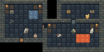

← Art exploration
Not in the game yet
The test room at the size the game draws it, 32 pixels a tile.
The two mixed, 8×8
Set aside 18 October 2026 · 1 version, newest first
Emberfall's floors, walls and torchlight, with Mini Medieval's people, monsters, doors and treasure recoloured to match.
Version 1 18 October 2026
The first drawing.

Tiles
- Floor
- Lit floor
- Stone wall
- Wall face
- Door
- Open door
- Gate door
- Switch
- Water
- Lava
- Rubble
- Altar
- Lever
- Stairs down
- Torch
- Chest
- Gold
- Potion
- Adventurer
- Goblin
- Skeleton
- Giant rat
Mini Medieval art by VEXED, v3x3d.itch.io/mini-medieval, CC BY 4.0.